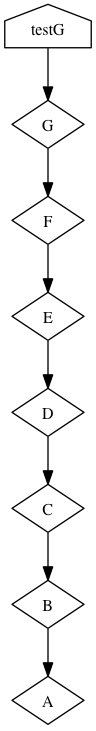

The structure is not so good, though. What does testG
depend on? If any of the A-G packages change,
testG is going to have to change too. That's a lot of
coupling, and will make G a pain to maintain.
The structure is not so good, though. What does testG
depend on? If any of the A-G packages change,
testG is going to have to change too. That's a lot of
coupling, and will make G a pain to maintain.
Goal: Gain familiarity with how CMake handles larger structures
In the prior exercise, you saw how CMake handles all the machine-specific aspects of building your code. You can bundle up source and a few CMakeLists.txt files and distribute them via your source control system. At the destination computer, CMake will create the necessary parts to build, and the local build system will create the needed parts.
This allows the consistency of the system to be enforced in the source control system, with CMake entering downstream from that. We play with that in this exercise.
First, we create and populate a new directory:
cd
./csc_get exerciseM2.tar
tar xf exerciseM2.tar
cd exerciseM2
source setup.sh
Each has a CMake control file that builds a library from the source file in that directory. Each source file defines a class that prints a message.
Now look at G. There, you also see a G class that's like the A-F ones, but also a test executable (testG.cxx) that invokes the entire string of classes. There's also a CMakeLists.txt file that controls both building the G library, and also building the G executable.
Now build it and see if that executable runs:
cmake .
make
./G/testG
Note that there's a bug in D! It's not printing cleanly. Usually, something like this gets fixed in source control, e.g. Git, and then checked out. CMake and make then do their job to build a executable with the fix.
The structure is not so good, though. What does testG
depend on? If any of the A-G packages change,
testG is going to have to change too. That's a lot of
coupling, and will make G a pain to maintain.
In larger systems, tools to compute and display the coupling
can be very helpful. The image to the right
was made automatically by CMake, using
cmake --graphviz=foo.dot
dot -o foo.png -Tpng foo.dot
 This is not just a change to CMake files or even to source files. It's a change to the system which reduces the complexity & coupling by changing each from "Just tell me about yourself" to "Tell me about yourself and the ones that follow you". The first, "about yourself" seems simple, until you realize that everybody using the code needs to know much more about everything. The second, "yourself and followers", moves that responsibility from being spread across all the using classes to being localized in each specific package.
To see this in practice:
cd
./csc_get exerciseM2A.tar
tar xf exerciseM2A.tar
cd exerciseM2A
source setup.sh
C/C.h and C/C.cxx. They
include and reference their successor.
The CMakeLists.txt
file had to make sure that C could
properly reference B, both at include-time and
link-time. Compare this C/CMakeLists.txt
with the one in the C package in your ~/exerciseM2
directory to see that.
The include-time statements we'd
see before. To handle linking, we added a
target_link_libraries(C B) line
to tell it which libraries link together.
The G package is simpler, though. It had been necessary to name
everything at link time before:
target_link_libraries (testG A B C D E F G)
target_link_libraries (testG G)
Still, it works fine:
cmake .
make
./G/testG
(Hint for new C++ programmers: You can create a new directory D2, copy the D files to it, change the references to D to D2 throughout, and then change D.cxx to D2.cxx containingplus appropriate changes in D's CMakeLists.txt file. You also have to declare a new subdirectory in the top-level CMakeLists.txt file)#include "D2.h" void D::print () { cout<<"Hello from D via D2"<<endl; }
In a perfect world, you could create this with only changes to D and D2, not anything else. See if that works in this structure. Are there any problems? Do you need to change anything else? If you're the D programmer, do you need to coordinate with people?
(Hint: If you're not able to get this after a little bit of work, there's a working version you can get withand then look at)cd csc_get exerciseM2B.tar tar xf exerciseM2B.tar
Then try the same thing in the previous exerciseM2 structure.
cd ~/exerciseM2
(copy your changes over & edit as needed)